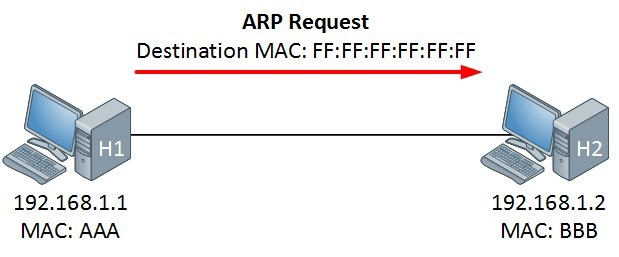
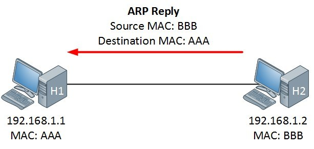
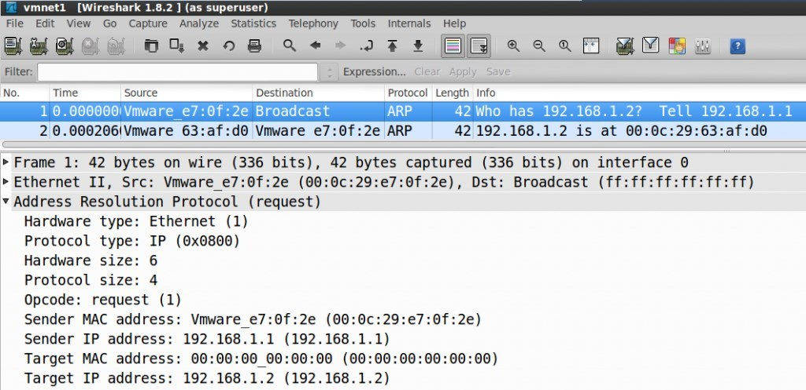
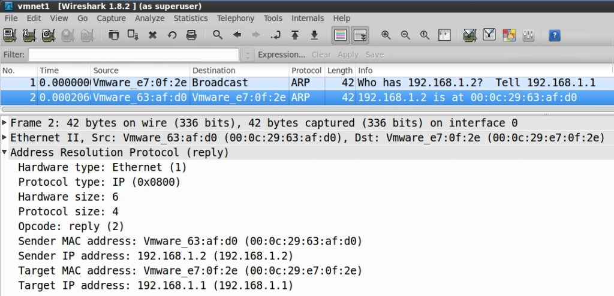

ARP (Address Resolution Protocol) explained
Quick recap quizاختبار مراجعة سريع
Why do we need ARP?ليه محتاجين ARP؟
If you learned about the OSI Model and encapsulationالتغليف — إضافة هيدر كل طبقة حوالين البيانات / decapsulation you know that when two computers on the LANالشبكة المحلية want to communicate with each other the following will happen:
- An IP packet is created with a source and destination IP address carrying the data from an application.
- The IP packet will be encapsulated in an Ethernet frame with a source and destination MAC addressالعنوان الفيزيائي لكرت الشبكة.
The sending computer will of course know its source MAC address, but how does it know the destination MAC address? That's where ARPAddress Resolution Protocol — بروتوكول تحويل عنوان IP إلى عنوان MAC comes into play.
لو درست OSI Model وعملية encapsulation / decapsulation تعرف إن لما جهازين على الـ LAN يحبوا يتكلموا مع بعض بيحصل ده:
- بيتعمل IP packet فيه عنوان IP مصدر ووجهة، وبيشيل البيانات من التطبيق.
- الـ IP packet بيتغلّف جوه Ethernet frame فيه عنوان MAC مصدر ووجهة.
الجهاز المرسل طبعًا عارف عنوان MAC بتاعه (المصدر)، لكن إزاي هيعرف عنوان MAC الوجهة؟ هنا بيجي دور ARP.
The exampleالمثال
We have two computers, H1 and H2, each with an IP address and a MAC address (H1: 192.168.1.1, MAC AAA; H2: 192.168.1.2, MAC BBB). Sitting behind H1, we open a command prompt and type:
عندنا جهازين H1 و H2، كل واحد له IP و MAC (H1: 192.168.1.1 و MAC AAA؛ H2: 192.168.1.2 و MAC BBB). واحنا قاعدين على H1 بنفتح command prompt ونكتب:
Ping uses the ICMPبروتوكول رسائل التحكم — بيستخدمه ping protocol, and IP uses the network layer (layer 3). Our IP packet will have a source IP address of 192.168.1.1 and a destination IP address of 192.168.1.2. The next step is to put our IP packet in an Ethernet frame, where we set source MAC address AAA and destination MAC address BBB.
Now wait a second… how does H1 know the MAC address of H2? We know the IP address because we typed it, but there is no way for H1 to know the MAC address of H2. Another protocol solves this problem for us: ARP.
ping بيستخدم بروتوكول ICMP، وIP شغال على طبقة الشبكة (الطبقة 3). الـ IP packet هيبقى فيه عنوان IP مصدر 192.168.1.1 ووجهة 192.168.1.2. الخطوة الجاية إننا نحط الـ IP packet جوه Ethernet frame، ونكتب فيه MAC المصدر AAA وMAC الوجهة BBB.
استنى شوية… H1 عرف منين عنوان MAC بتاع H2؟ عنوان الـ IP عارفينه لأننا كتبناه، لكن مفيش أي طريقة إن H1 يعرف الـ MAC بتاع H2 لوحده. في بروتوكول تاني بيحل المشكلة دي، وهو ARP.
The ARP tableجدول ARP
Above is an example of an ARP tableجدول بيخزّن الربط بين IP و MAC on H1. There is only one learned entry: this computer has learned that the IP address 192.168.1.2 has been mapped to the MAC address 00:0C:29:63:AF:D0.
ده مثال على جدول ARP في H1. فيه إدخال واحد متعلَّم بس: الجهاز ده اتعلّم إن عنوان الـ IP 192.168.1.2 مربوط بعنوان الـ MAC 00:0C:29:63:AF:D0.
dynamic entries are learned through ARP (and expire after a while); static entries are added automatically by the OS for broadcast/multicast addresses, so they don't need ARP. In the exam, remember that only dynamic entries prove ARP was used.
الإدخالات dynamic بتتعلّم عن طريق ARP (وبتنتهي بعد فترة)، أما static فالنظام بيضيفها تلقائي لعناوين الـ broadcast والـ multicast فمش محتاجة ARP. للامتحان: بس الإدخالات الـ dynamic هي اللي بتثبت إن ARP اشتغل.
ARP request & ARP replyطلب ARP والرد عليه

We are sitting behind H1 and want to send a ping to H2. The ARP table is empty, so we have no clue what the MAC address of H2 is. The first thing that happens is that H1 sends an ARP Request. This message basically says "Who has 192.168.1.2 and what is your MAC address?" Since H1 doesn't know the MAC address, it uses the broadcastبث — رسالة بتوصل لكل الأجهزة MAC address as the destination (FF:FF:FF:FF:FF:FF). This message will reach all computers in the network.
إحنا قاعدين على H1 ونحب نبعت ping لـ H2. جدول ARP فاضي فمش عارفين الـ MAC بتاع H2. أول حاجة بتحصل إن H1 بيبعت ARP Request. الرسالة دي معناها: "مين عنده 192.168.1.2 وإيه عنوان الـ MAC بتاعه؟" ولأن H1 مش عارف الـ MAC، بيستخدم عنوان الـ broadcast (FF:FF:FF:FF:FF:FF) كوجهة. فالرسالة دي هتوصل لكل الأجهزة في الشبكة.

H2 replies with an ARP Reply, basically saying "that's me! And this is my MAC address." H1 can now add the MAC address to its ARP table and start forwarding data towards H2.
H2 بيرد بـ ARP Reply ومعناه: "أنا هو! وده عنوان الـ MAC بتاعي." دلوقتي H1 يقدر يضيف الـ MAC لجدول ARP بتاعه ويبدأ يبعت البيانات لـ H2.
ARP in WiresharkARP في Wireshark
If you want to see this in action you can look at it in Wiresharkأداة لالتقاط وتحليل الحزم. Two packets are captured: the request (destination "Broadcast", so it is flooded on the network) and the reply (H2 sends its MAC address to H1).
لو عايز تشوف ده عمليًا تقدر تشوفه في Wireshark. بيتلقط packet-ين: الطلب (الوجهة "Broadcast" فبيتعمله flood على الشبكة) والرد (H2 بيبعت الـ MAC بتاعه لـ H1).
| No. | Time | Source | Destination | Protocol | Length | Info |
|---|---|---|---|---|---|---|
| 1 | 0.000000 | Vmware_e7:0f:2e | Broadcast | ARP | 42 | Who has 192.168.1.2? Tell 192.168.1.1 |
| 2 | 0.000206 | Vmware_63:af:d0 | Vmware_e7:0f:2e | ARP | 42 | 192.168.1.2 is at 00:0c:29:63:af:d0 |


| Field | ARP Request (frame 1) | ARP Reply (frame 2) |
|---|---|---|
| Frame size | 42 bytes (336 bits) | 42 bytes (336 bits) |
| Ethernet II — Src | 00:0c:29:e7:0f:2e | 00:0c:29:63:af:d0 |
| Ethernet II — Dst | ff:ff:ff:ff:ff:ff (Broadcast) | 00:0c:29:e7:0f:2e |
| Hardware type | Ethernet (1) | Ethernet (1) |
| Protocol type | IP (0x0800) | IP (0x0800) |
| Hardware size | 6 | 6 |
| Protocol size | 4 | 4 |
| Opcode | request (1) | reply (2) |
| Sender MAC | 00:0c:29:e7:0f:2e | 00:0c:29:63:af:d0 |
| Sender IP | 192.168.1.1 | 192.168.1.2 |
| Target MAC | 00:00:00:00:00:00 | 00:0c:29:e7:0f:2e |
| Target IP | 192.168.1.2 | 192.168.1.1 |
You can see that H2 sends its MAC address in the ARP reply to H1. That's all the source shows about ARP.
تقدر تشوف إن H2 بيبعت الـ MAC بتاعه في الـ ARP reply لـ H1. ده كل اللي المرجع بيوضحه عن ARP.
Common questions from the lesson forumأسئلة شائعة من منتدى الدرس
- Q: Why does the ARP request show 00:00:00:00:00:00 as Target MAC instead of FF:FF:FF:FF:FF:FF?
Instructor: FF:FF:FF:FF:FF:FF in binary is all 1s — it is broadcast within the broadcast domain, so the ARP request reaches all devices in it. (The asker replied that this didn't explain the zeros in the screenshot; see the note below.) - Q: Can you explain the same scenario with 2 switches and 2 routers in between? (Computer A — Switch1 — Router1 — Router2 — Switch2 — Computer B)
(No answer is shown in the PDF; see the note below.)
- سؤال: ليه الـ ARP request بيوري 00:00:00:00:00:00 في Target MAC بدل FF:FF:FF:FF:FF:FF؟
المدرّب: FF:FF:FF:FF:FF:FF بالثنائي كله 1، يعني بيتبعت broadcast جوه الـ broadcast domain وبكده الطلب بيوصل لكل الأجهزة فيه. (السائل رد إن ده مش بيفسّر الأصفار في الصورة؛ شوف الملحوظة تحت.) - سؤال: ممكن تشرح نفس السيناريو بس بـ 2 switch و2 router في النص؟ (Computer A — Switch1 — Router1 — Router2 — Switch2 — Computer B)
(مفيش إجابة ظاهرة في الـ PDF؛ شوف الملحوظة تحت.)
Zeros vs. FF:FF…: two different places. The Ethernet destination is FF:FF:FF:FF:FF:FF (so everyone receives the frame). The ARP message inside has a "Target MAC" field that means "the thing I'm asking for" — it's unknown, so it's filled with zeros.
Routers in between: ARP never crosses a router — it stays inside one broadcast domain. Computer A ARPs for its default gateway's MAC (Router1's interface), Router1 ARPs on the Router1–Router2 link, and so on. The IP addresses stay the same end to end, while the MAC addresses change at every hop.
الأصفار مقابل FF:FF…: دول مكانين مختلفين. وجهة الـ Ethernet هي FF:FF:FF:FF:FF:FF (عشان الكل يستلم الـ frame). أما رسالة الـ ARP جوّاه فيها حقل "Target MAC" معناه "اللي بسأل عليه" — ده مجهول فبيتملي أصفار.
لو في راوترات في النص: ARP عمره ما بيعدي راوتر — بيفضل جوه broadcast domain واحد. Computer A بيعمل ARP على الـ MAC بتاع الـ default gateway (واجهة Router1)، وRouter1 بيعمل ARP على اللينك بينه وبين Router2، وهكذا. عناوين الـ IP بتفضل زي ما هي من الأول للآخر، بينما عناوين الـ MAC بتتغير في كل hop.
Summaryملخص الدرس
- An Ethernet frame needs a destination MAC; ARP finds the MAC that belongs to a known IP address.
- ARP Request = broadcast (FF:FF:FF:FF:FF:FF): "Who has this IP?" — Opcode 1.
- ARP Reply = the owner answers directly with its MAC — Opcode 2.
- The answer is stored in the ARP table (arp -a) so the next packets can be sent right away.
- الـ Ethernet frame محتاج MAC وجهة؛ ARP بيلاقي الـ MAC اللي بيخص عنوان IP معروف.
- ARP Request = broadcast (FF:FF:FF:FF:FF:FF): "مين عنده الـ IP ده؟" — Opcode 1.
- ARP Reply = صاحب الـ IP بيرد مباشرة بالـ MAC بتاعه — Opcode 2.
- الرد بيتخزن في جدول ARP (arp -a) عشان الـ packets الجاية تتبعت على طول.
🧠 Lesson quiz🧠 اختبار الدرس
Wrong = red, correct = green. Reveal the answer any time and translate any question with the 🌐 button.غلط = أحمر، صح = أخضر. تقدر تشوف الإجابة في أي وقت وتترجم أي سؤال بزرار 🌐.